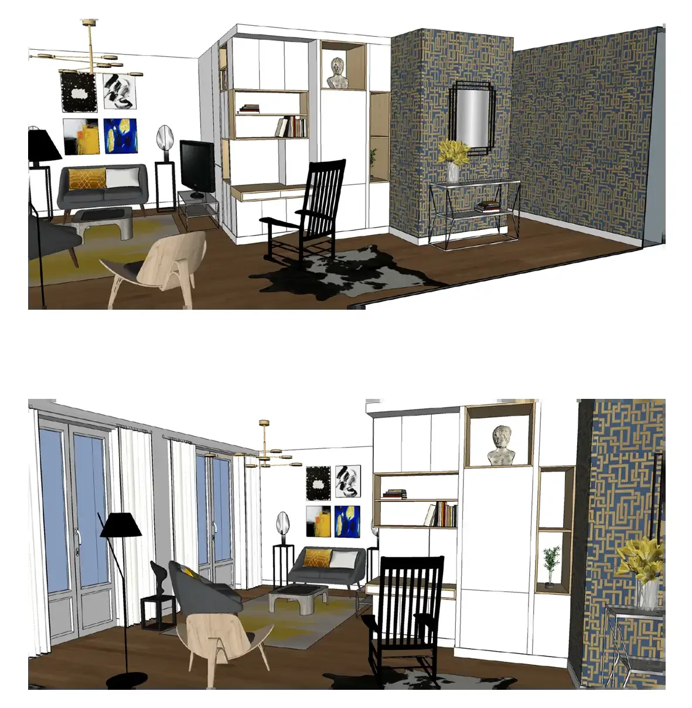
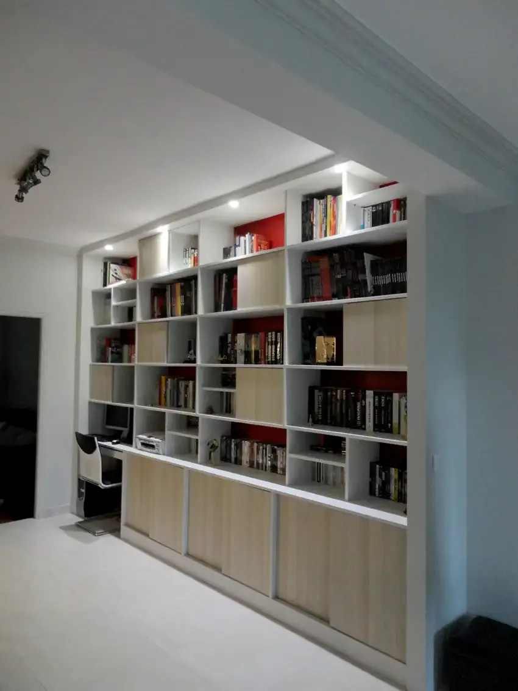
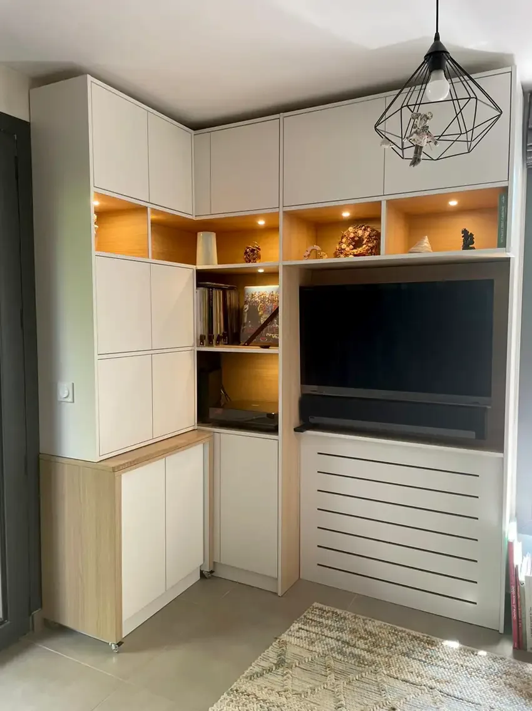
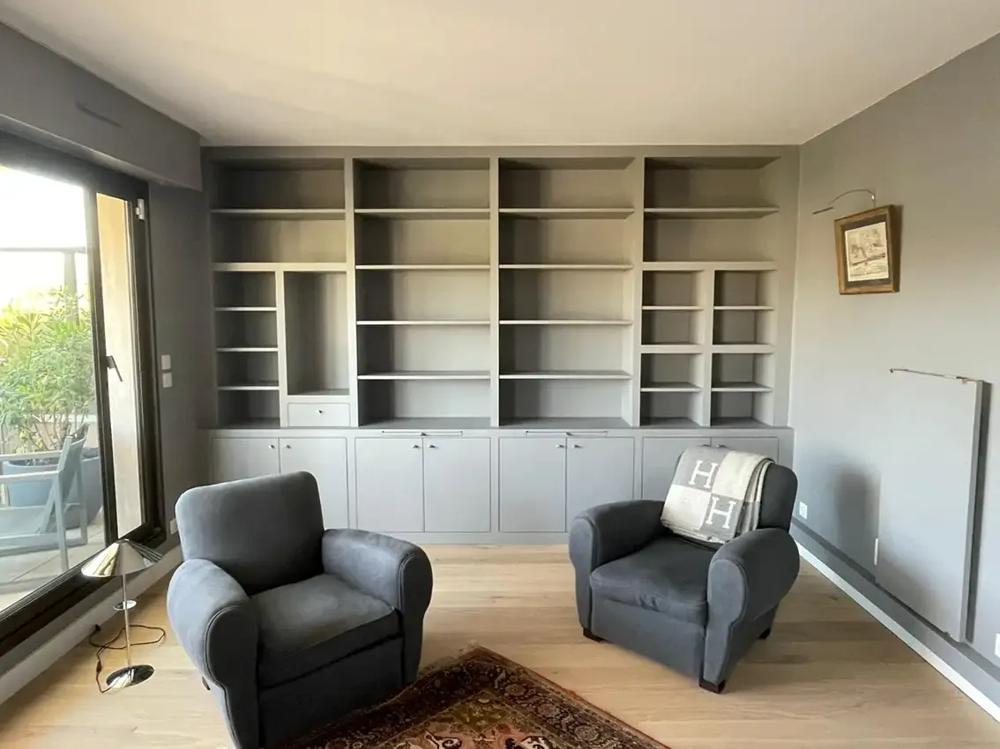
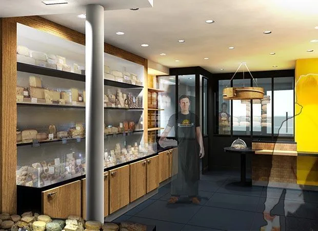
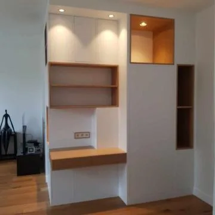
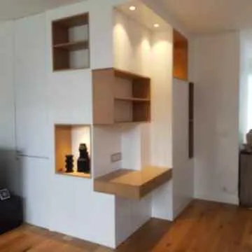
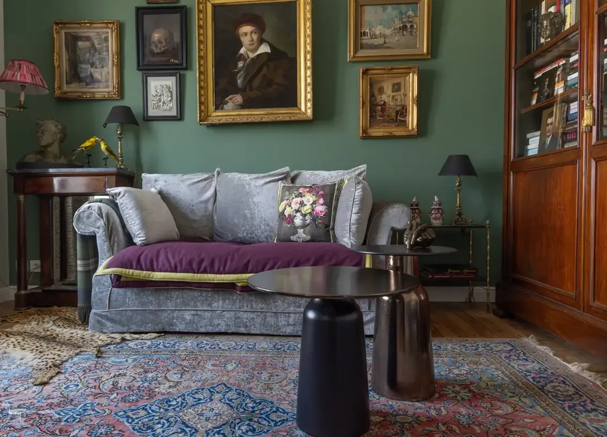
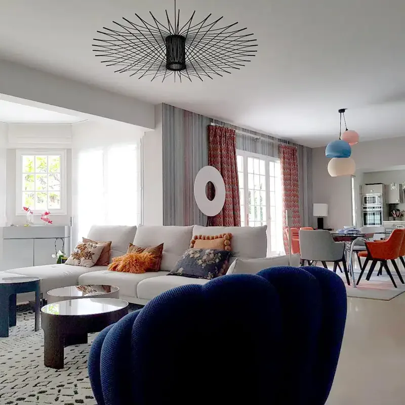

Qu’il s’agisse de meubler un projet d’aménagement de maison ou bien des locaux professionnels, votre architecte d’intérieur est capable de concevoir du mobilier sur mesure adapté à votre besoin et au style qu’il aura défini.
Quels avantages y a-t-il à faire appel à nos services pour réaliser bibliothèques, placards et autres rangements sur mesure ?








